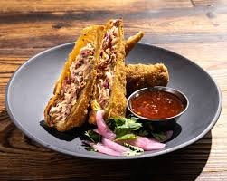
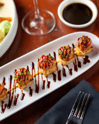
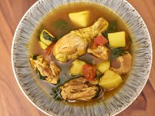
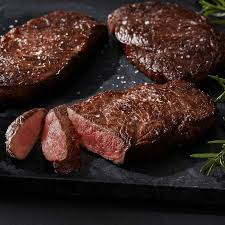
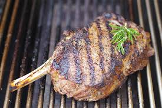
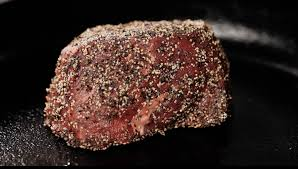
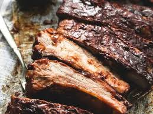
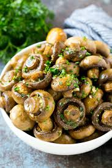
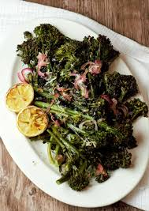

✦ Starters & Appetizers ✦ Smoked Brisket Egg Rolls: Slow-braised pulled brisket wrapped in a crispy shell, served with a tangy Texas bourbon BBQ aioli.

Pastrami Empanadas: Flaky pastry dough stuffed with seasoned, sautéed pastrami and caramelized sweet onions, paired with a honey-mustard dipping sauce. Crispy Rice Tuna Tartare: Spicy yellowfin tuna tartar resting over pan-fried, crispy sushi rice blocks, finished with an avocado mousse glaze.

Rich Yemenite Chicken Soup: A traditional comforting bone broth loaded with shredded pulled chicken, fresh root vegetables, and aromatic spices.

✦ Premium Steaks & Chops ✦
All steaks are certified Glatt Kosher, aged in-house, and char-broiled over a hardwood flame. 12 oz. Center-Cut Ribeye: Well-marbled, highly tender signature cut, basted in rich beef tallow and served with a charred shallot reduction.

22 oz. Bone-In Cowboy Ribeye: A massive, thick-cut bone-in rib chop grilled to your desired temperature, perfect for the ultimate steak purist.

10 oz. Peppercorn Filet Mignon (Cured/Faux): Ultra-lean, tenderized shoulder cut crusted with cracked black peppercorns and finished with a rich red-wine demi-glace.

Slow-Roasted BBQ Ribs: Full rack of beef short ribs slathered in a house-made, smoky brown sugar barbecue glaze and cooked until fork-tender.

Herb-Crusted Baby Lamb Chops: Triple-cut lamb chops flame-grilled with rosemary and garlic, served over a bed of mint-infused jus.
✦ Alternative Mains ✦ King Salmon: Crisp-skinned fresh salmon fillet served over wild rice with braised wild mushrooms and a light lemon-herb jus. Cast-Iron French Chicken Breast: Sautéed airline chicken breast cooked with caramelized pearl onions, fingerling potatoes, and a dry white wine reduction. The Steakhouse Burger: A custom 10 oz. prime beef blend on a toasted pretzel bun, topped with house-cured pastrami, crispy leeks, avocado crema, and thick steak fries.
✦ Decadent Pareve Sides ✦
All sides are entirely dairy-free (pareve). Tallow-Fried Truffle Fries: Hand-cut potatoes fried in beef tallow, tossed with white truffle oil and fresh parsley. Garlic Roasted Wild Mushrooms: A medley of sautéed shiitake, oyster, and cremini mushrooms cooked down with garlic, olive oil, and dry sherry.

Creamy Mashed Potatoes: Velvety, smooth Yukon gold potatoes whipped with rich olive oil and roasted garlic broth. Charred Broccolini: Grilled stems tossed with toasted pine nuts, sea salt, and a squeeze of fresh lemon juice.

✦ Desserts ✦ Chocolate S'mores Explosion: A warm chocolate lava cake topped with toasted, dairy-free marshmallows, graham cracker crumbs, and a scoop of vanilla bean soy ice cream. Cinnamon Sugar Churros: Crispy, golden Spanish churros served warm with a rich, dark chocolate dipping sauce. Classic Tiramisu: Espresso-soaked ladyfingers layered with a light, creamy pareve mascarpone alternative and dusted with dark cocoa powder.